Something broken? Go to Troubleshooting. Learning Twine? Go step by step: start at Step 1, then click Next at the bottom of each page. Still stuck? Send me a Mio.
Not on the list? Try the search bar at the top. Still stuck? Send me a Mio with a screenshot.
Planning
Does my idea count as a game that "makes an argument"?
You've got an idea, and your pitch asks what argument your game makes. You're not sure if "a game about social media" counts.
Use the essay test: if your game could be rewritten as a short essay and lose nothing, the game isn't doing the work.
The argument has to live in the systems: win/loss conditions, numbers going up and down, choices that get locked out, things that get punished or rewarded. This is procedural rhetoric.
✗ Topic, not an argument
"A game about social media."
✓ An argument the systems make
"Every post raises your $followers but lowers your $sleep, and you can't win without burning out."
A quick check: can you say your argument in one sentence, and point to the variable that makes it?
I have no idea what to make. Where do I start?
You're staring at a blank page, and "make a game that argues something" isn't helping.
Pick a shape below. Use one, combine two, or ignore them all.
Shape
The idea
Gamification (a good place to start)
Scores, streaks, ratings, and rewards creeping into non-game parts of life. It's what the second half of the course is about, and it's easy to build systems around. Most of the shapes below can be pointed at it.
Score-world
Your prospects (jobs, housing, relationships, freedom) depend on a score in an app. Nosedive and social credit are reference points; credit scores, Uber ratings, and GPAs are the everyday versions.
The optimizer
You're trying to maximize a metric (steps, productivity, engagement, grades, followers), and the game makes you feel what that does to everything else.
The rigged system
Looks fair on the surface, but variables under the hood are stacked against the player. Good for structural inequality, algorithmic bias, "meritocracy".
The bureaucratic maze
Navigating a system (healthcare, financial aid, a help desk) where the rules themselves are the antagonist. Papers, Please is the reference point.
The impossible job
A role that can't actually be done well (content moderator, caregiver, teacher under impossible constraints), and the systems make the impossibility visible.
The Chamber of Choices
Choices appear, disappear, or grey out based on stats, background, or earlier decisions. Crossed-out options can make an argument about what's available to whom.
The unreliable narrator
The text says one thing, the variables track another, and the gap is the point. Good for propaganda, self-deception, corporate euphemism.
Story mode
Branching narrative where choice and writing carry most of the weight. Fine, but the systems still have to do some arguing, not just gate scenes.
Inventory as identity
What you pick up, keep, or lose changes who you are and what options you see. Class, consumption, memory.
The countdown
Something is decreasing (time, money, health, hope, attention) and every choice spends it. Scarcity and what people are forced to trade away.
Weird / poetic / abstract
Not every Twine game needs to be narrative or "gamey". Some of the best are closer to poems or mood pieces. Legitimate, if you have an argument that wants to be felt more than played.
Doing something more "gamey" than narrative (a puzzle, a character generator)? You can trade more systems for less text. Flag it at your pitch meeting.
Should we start building in Twine right away?
Your group has an idea, and everyone wants to open Twine and start typing.
Sketch it on paper first. It's much faster, and you won't get stuck on code before the design is settled.
Draw a box for each passage (each "page" of your game), with a few words about what happens.
Draw arrows for the choices between them.
Next to each box, write which variables change there (+1 money, -2 energy).
Take a photo. It's handy later for your reflection.
Can I see some good Twine games for inspiration?
Your group can't picture what a Twine game can even look like, so every idea sounds like a choose-your-own-adventure book.
Download and open in Twine to see how they're made, or as a starting point.
Getting started
Before you start: how do I make sure I never lose my game?
Every semester, someone opens Twine the week it's due and their game is gone. Twine doesn't save a file anywhere you'd expect, so if you don't make your own copies, one cleared browser or one different computer is all it takes.
At the end of every work session: Build → Publish to File, and save the file with the date in its name.
Open your story and click Build at the top, then Publish to File.
Rename the file it downloads with today's date: shift-2026-11-20.html. A new file every time, so you can always go back to yesterday's version if you break something.
Put it somewhere that isn't just this computer: Google Drive, OneDrive, or email it to yourself.
That same file is also what you submit, so you're not doing extra work.
Why this matters: Twine keeps your game inside the program (or inside your browser, if you use Twine on the website). So:
Clear your browser history or cache, and your game is gone.
Switch browsers or computers (a lab computer, your laptop), and your game is not there.
Work in an incognito/private window, and your game disappears when you close it.
The Twine app and Twine in a browser don't share: a game made in the lab's browser isn't in the app on your laptop.
You missed the Twine play journals (or don't remember them), and you need to get going.
Use Twine in Chrome, then follow these pages in order with the Next button.
Go to twinery.org. Download the app (free, Mac or PC), or click Use it online to work in your browser.
Use Chrome. Twine works best there. Safari and Firefox can act up.
Don't use your phone. Building on a phone doesn't really work, and playing on a phone is hit or miss. Use a computer, and test your finished game on a computer.
Why doesn't the code I found online work in my game?
You found a tutorial, a forum answer, or a Reddit post with exactly what you need. You paste it in, and Twine shows an error, or nothing happens.
It's almost certainly written for a different "story format". We use Harlowe. Code written for other formats will break your game, which is why you shouldn't copy code from random places.
Twine has several story formats, which are basically different coding languages: Harlowe, SugarCube, Snowman, and Chapbook. They look similar and are completely incompatible.
✗ SugarCube (double angle brackets): breaks in our games
<<set $gold to 5>>
✓ Harlowe (round brackets and a colon)
(set: $gold to 5)
Before you use anything from outside this page, look for the word "Harlowe". If it isn't there, assume it's the wrong one, even if it looks close.
To check what your own story uses: open your story, click Story at the top, then Details.
Story tab → Details.
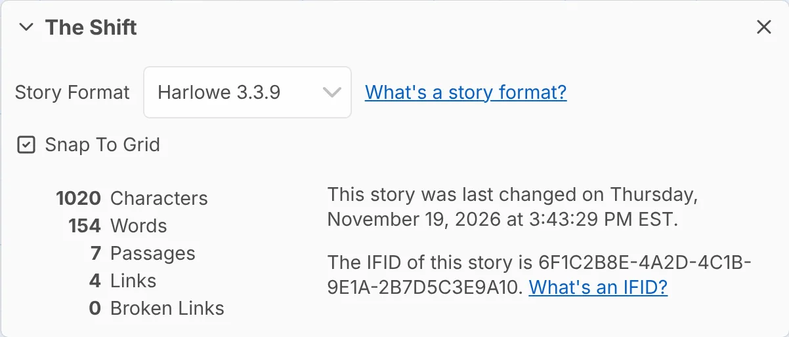
Story Format should say Harlowe 3.something. This panel also counts your words, passages, and broken links: handy for checking the project requirements.
How do I open my saved game again (or open the example game)?
You're on a different computer, or you want to keep working on yesterday's file, or you want to look inside the example project.
On the Twine home screen: Library → Import, then pick the .html file.
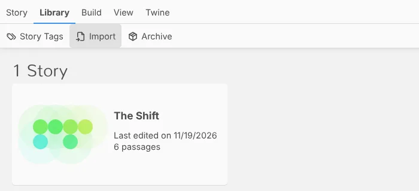
Library → Import. Then click the story card and Edit.
Double-clicking the .html file on your computer will play the game in your browser. To edit it, you have to import it.
Careful: importing can replace your game
If Twine already has a story with the same name, importing replaces it completely. If the file you're importing is older, your newer work is gone. Watch for this line:
If you see this line, stop and check which version is newer.
Not sure? Rename the story already in Twine first (click its card, then Rename), then import. You'll have both.
Where can I find tutorials, documentation, and tools?
This page didn't cover what you're trying to do, or you learn better from a video.
Everything is below. Before you use any tutorial, check that it says "Harlowe" (why).
Want to build a complicated inventory? I wouldn't recommend it, but here you go.
Working together
How do we split the work as a group?
Your group has one game to make, and so far one person is doing everything (or nobody is doing anything), because a Twine game is one file and it's not obvious how to share it.
Pick one of these methods (or mix them). Decide together at the start.
🗺️Method 1: Plan together, one person builds
Everyone does the thinking and writing together (brainstorming, paper prototype, writing passages). One person types it all into Twine.
Good for: groups where one person is comfortable with Twine.
🎭Method 2: Split by role
One person builds in Twine, one makes or finds images and sound, one writes the reflection, one does research and writing.
Good for: groups with different strengths.
🔁Method 3: Take turns with the file
Everyone builds, one at a time, passing the game along.
When you're done, Build → Publish to File, and name it with the date.
Send the file to the next person (group chat, Drive, email), and say "you have it now."
They open it with Library → Import.
Good for: groups who all want to build. Make sure you're always working on the newest file (why).
📄Method 4: Everyone writes in a Google Doc, then import it
Everyone writes passages in one shared Google Doc, at the same time. Then one person brings it into Twine in one go.
Plan the game together, then split it by branch: one person writes everything that happens if the player takes the job, another writes what happens if they quit. Each person builds their path in their own copy of Twine, and you combine them at the end.
Together, write the start of the game (the "hub") with one choice per path.
Agree on your variable names before anyone starts (write them in the group chat: $energy, $rating...), so everyone's code matches.
Everyone starts their passage names with their own name (Ana 1, Ana 2; Ben 1...), so no two passages have the same name.
Good for: everyone gets real Twine practice, and nobody waits for anybody.
How do we write the game in a Google Doc and bring it into Twine?
Your group wants to write at the same time, in one place, without passing a file around.
Write the passages in a shared Google Doc using a simple format called Twee, then import it into Twine.
A .twee file is not your game
It only opens inside Twine. To submit on Lea or upload to itch, always use Build → Publish to File, which makes the .html. See the difference.
In Twee, each passage starts with two colons and its name. Everything under it is the passage: text, links, and code.
Your shared Google Doc
:: StoryTitle
Our Game
:: Start
Your shift starts at 6:00.
[[Clock in->Locker Room]]
:: Locker Room
Your badge is in the locker.
Everyone: turn off smart quotes first. In Google Docs: Tools → Preferences, uncheck Use smart quotes. Otherwise your code breaks (why).
Write your passages in the Doc, in the format above. Tags go in square brackets after the name: :: StatusBar [footer].
When you're ready, one person copies all the text and pastes it into a plain text editor: Notepad (Windows) or TextEdit (Mac: then Format → Make Plain Text).
Save it as our-game.twee. In Notepad, set "Save as type" to All files, or it becomes our-game.twee.txt and Twine won't take it.
In Twine: Library → Import, and pick the .twee file.
Your game appears in the Library. Click it, then Edit.
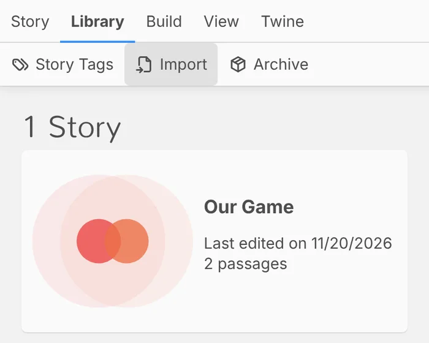
Your passages and links are all there. Drag them into a tidy layout, then add images and test.
Going the other way:Build → Export As Twee turns your Twine game back into text, so you can paste the current version into the Doc for everyone to read.
Importing the Doc a second time will replace the game in Twine with the same name, including anything you added in Twine since. If you need to bring in more passages later, give the new import a different StoryTitle (more).
How do we combine everyone's parts into one game?
Everyone in your group built their part of the game in their own Twine. Now you have three separate stories, and you need one game.
Easiest: use the Twee combiner tool. Or do it by hand: everyone exports their part as text (Twee), one person pastes it all into one file, and imports that file into Twine.
Everyone: open your part, click Build → Export As Twee, and send the file to the person putting it together.
The person putting it together: open your own .twee file in Notepad (Windows: right-click it → Open with → Notepad) or TextEdit (Mac).
Open a teammate's file the same way. Copy all of it except the top two sections, the ones that start with :: StoryTitle and :: StoryData (and the lines under them, up to the next ::).
Paste it at the very bottom of your file. Repeat for each teammate.
At the top of your file, change the line under :: StoryTitle to a new name, like Our Game combined. (If it has the same name as a story already in your Twine, importing would replace it.)
Save it with a new name ending in .twee. In Notepad, set "Save as type" to All files.
In Twine: Library → Import, pick the file. Open it and check the map: your hub should link to everyone's paths.
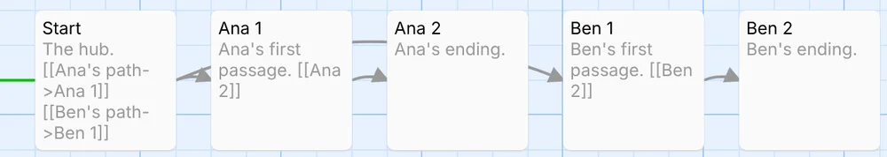
Two people's paths, combined: the hub (Start), Ana's passages, and Ben's.
Play it from start to finish, every path.
Before you combine
No two passages can have the same name. (That's why everyone starts their names with their own name.)
Everyone must use the same variable names, spelled the same way, capitals included.
Only one person should have a startup passage with the starting values. Combine everyone's (set:) lines into that one.
Twine basics
How do I make passages and choices?
You've opened Twine and want the player to be able to choose something. In Twine, every "page" of your game is a passage, and every choice is a link from one passage to another.
Type [[Get up]] in a passage, and Twine makes a choice and the passage it leads to.
On the Twine home screen, click Story → + New, type a name, and click Create.
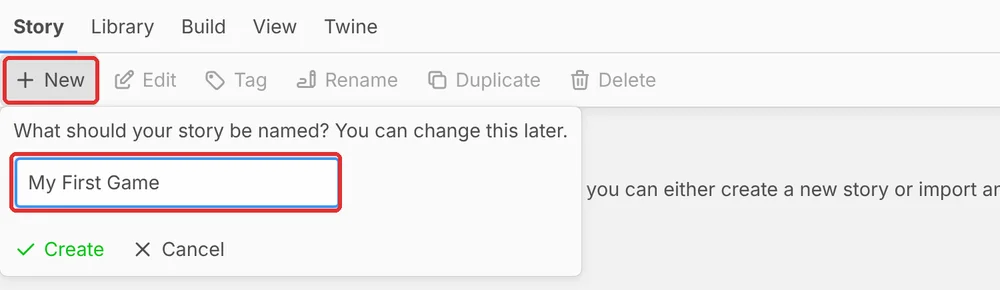
You'll see one passage with a green rocket next to it. The rocket marks where your game starts. (Don't click Start Story Here unless you mean to move it: why.) Double-click the passage to open it.
Write some text. Then, on its own line, type a choice in double square brackets:
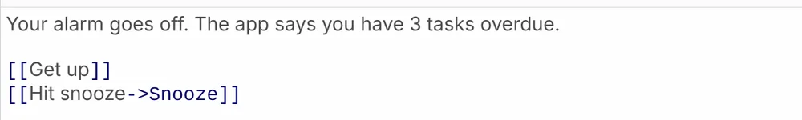
Snooze]]" loading="lazy">
Twine creates the new passages for you, with arrows showing where each choice goes:
Double-click each new passage and write what happens there.
Click Build → Play to try it. The player sees your choices as links:
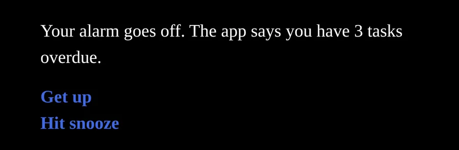
Two kinds of link:
[[Get up]]
[[Hit snooze->Snooze]]
[[Get up]]: the player sees "Get up", and it goes to a passage called Get up.
[[Hit snooze->Snooze]]: the player sees "Hit snooze" (before the arrow), and it goes to the passage called Snooze (after the arrow). Use this when you want the choice text to be different from the passage name.
Why use the arrow? To hide your passage names
Without the arrow, players see your passage names as the choices. With it, the passage name can be anything that helps you keep track ("Fired ending", "Bad path 3"), while players see a normal choice. Compare:
✗ The player sees "Fired ending": the twist is spoiled before they click
[[Fired ending]]
✓ The player sees "Ask for a raise"
[[Ask for a raise->Fired ending]]
Watch your spelling
The passage name has to match exactly, capitals included. [[get up]] with a small "g" makes a second, empty passage called "get up", and players who click it hit a dead end. If you see a passage you didn't mean to make, fix the spelling in the link and delete the extra passage. Story → Details shows your broken links.
What are "macros" and "hooks"?
The project requirements ask for a minimum number of macros and hooks, and you're not sure what those words mean, or whether your game has any.
A macro is an instruction. A hook is the chunk of your passage that the instruction applies to.
Macros: the instructions. Everything Twine "does" (besides showing text and links) is a macro. You can always spot one: round brackets, a name, a colon.
(set: $energy to 10)
(goto: "Floor")
(random: 1, 6)
Read them like sentences: "set energy to 10", "go to Floor", "pick a random number from 1 to 6". The word before the colon says what to do; what comes after says the details.
Hooks: the chunk the instruction applies to. Some instructions need something to act on: which text to show only if something is true, which words to colour red, what to do when a link is clicked. That something goes in square brackets right after the macro. Those square brackets are the hook.
(text-colour: red)↑ macro: "make this red"[You're exhausted.]↑ hook: "this"
The hook must come right after the macro, no space (why).
A macro on its own, like (set:) or (goto:), just does its job. Macros like (if:), (else:), (link:), and (text-colour:) need a hook to work on.
[[Get up]] (double brackets) is a link, not a hook.
A bigger example: hooks inside hooks. Real passages stack these. Here's one passage, piece by piece:
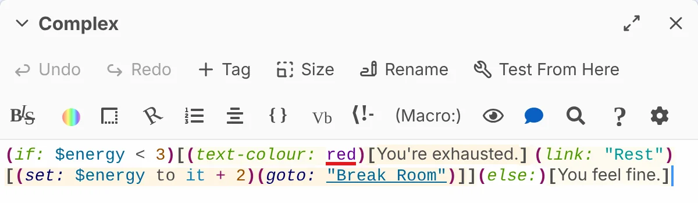
(if: $energy < 3)[(text-colour: red)[You're exhausted.] (link: "Rest")[(set: $energy to it + 2)(goto: "Break Room")]](else:)[You feel fine.]
(if: $energy < 3) checks the energy. Its hook is the big pair of brackets that holds everything up to (else:). All of that only shows if energy is under 3.
Inside it, (text-colour: red) has its own small hook: [You're exhausted.]. Those words are red.
Also inside it, (link: "Rest") makes a link. Its hook, [(set: ...)(goto: ...)], holds two more macros that only run when the player clicks "Rest".
(else:) and its hook [You feel fine.] show instead when energy is 3 or more.
So: 6 macros (if, text-colour, link, set, goto, else) and 4 hooks. With 2 energy, the player sees:
Lost in the brackets?
Twine's test mode can show you every macro and hook in a passage, labelled: see the debugger.
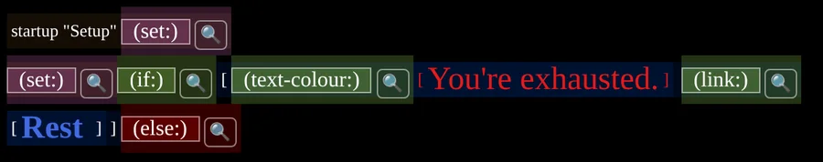
The same passage in Debug View: each macro is a labelled box.
The macros you'll use most:
Macro
What it does
Example
(set:)
Puts a value in a variable
(set: $energy to 10)
(if:) / (else:) / (else-if:)
Shows its hook only if something is true
(if: $energy < 3)[You're exhausted.]
(link:)
A link that runs its hook when clicked
(link: "Take it")[(set: $hasBadge to true)]
(goto:)
Sends the player to a passage
(goto: "Floor")
(random:)
Picks a random number
(random: 1, 6)
(text-colour:)
Colours its hook
(text-colour: red)[Warning]
Not sure how something counts toward the requirements? Ask me before you submit. Full list of macros: the sidebar of the Harlowe manual.
When does my code actually run?
Your code looks right, but the game does something else: a variable changes too early, a number on screen shows the old value, a choice you made "didn't count". Usually the problem is when the code runs.
Twine reads a passage once, top to bottom, the moment it appears. That's when every macro runs, except the ones inside a (link:) hook, which wait for a click.
Rule 1: top to bottom, in order. A line only "knows" what happened above it.
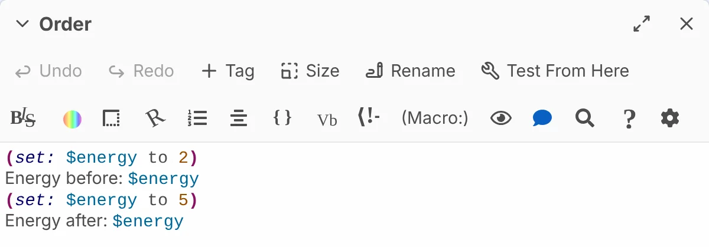
The first line printed before the second (set:) ran.
Rule 2: everything runs right away, unless it's waiting for a click. A (set:) sitting in a passage runs the instant the passage appears, before the player chooses anything. Code inside a (link:) hook waits until that link is clicked. (Why this matters for choices.)
(set: $hasBadge to true) <!-- runs as soon as the passage appears -->
(link: "Take it")[(set: $hasBadge to true)] <!-- runs only when "Take it" is clicked -->
Rule 3: what's on screen doesn't update by itself. Once a line is shown, it stays as it was, even if the variable changes later. (Example and fixes.)
Rule 4: (if:) decides once, when the passage appears. If the player's badge changes later in the same passage, the (if:) above doesn't re-check.
Rule 5: coming back to a passage runs it all again. Every visit starts from the top. A (set: $energy to 10) in a passage the player returns to resets energy every time. (Where starting values go.)
Special passages: a passage tagged startup runs once, at the very start of the game. Passages tagged header or footer run every time any passage appears (stats bar).
Variables
What's a variable? (and the 3 kinds you'll use)
Your game needs to remember something: how much energy the player has, whether they picked up the badge, their name. That's what a variable is: a named box that remembers one thing.
A variable's name starts with $. It can hold a number, true/false, or text.
Kind
Use it for
Example
Number
Anything you count or add up: money, energy, a rating, days left
(set: $energy to 10)
True / false
Yes-or-no things: has the badge, met the boss, got fired
(set: $hasBadge to false)
Text
Words: a name, a job title, a choice they made
(set: $name to "Sam")
Numbers and true/false have no quotes. Text has quotes.
Names: no spaces, don't start with a number, and capitals matter. Use camelCase: $hasBadge, $timesLate. (It's also more like camels.)
The lessons below build one small game, step by step, using all three kinds. Click Next to start.
Step by step: how do I create my variables and give them starting values?
You know what variables your game needs (energy, a rating, a badge, a name), and you need to create them with starting values. Where does that code go? If you put it in your first passage, testing from the middle of your game shows everything as 0, and if the player ever comes back to that passage, everything resets.
Put all of it in one passage with the tag startup. Twine runs it first, every time.
In your story, click + New (top left) to make a new passage.
Click Rename and call it Setup. It doesn't need any links, and players never see it.
Click + Tag, type startup (all lowercase, one word), and press Enter.
Type one (set:) line for each variable:
Passage: Setup (tag: startup)
(set: $energy to 10)
(set: $rating to 4.6)
(set: $hasBadge to false)
(set: $name to "Sam")
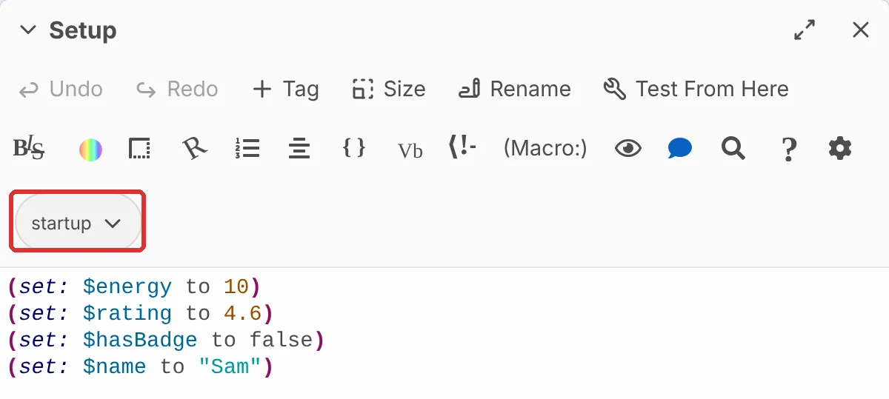
Your Setup passage: the startup tag (circled), and one line per variable.
Now your variables exist from the very start of the game. Next, let's show them to the player.
Step by step: how do I show a variable to the player?
You've made your variables, and you want the player to see them: "Energy: 10", or their name in a sentence.
Just type the variable's name (with the $) in your passage text. Twine swaps in the value.
Open your first passage (the one with the green rocket).
Type your text, and put the variable wherever you want its value to appear:
Good morning, $name.
Energy: $energy
Rating: $rating
[[Go to the locker room->Locker Room]]
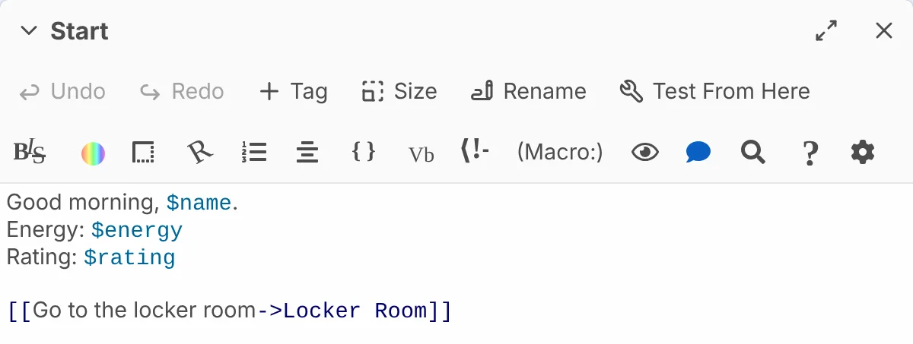
Click Build → Play. The player sees the values, not the names:
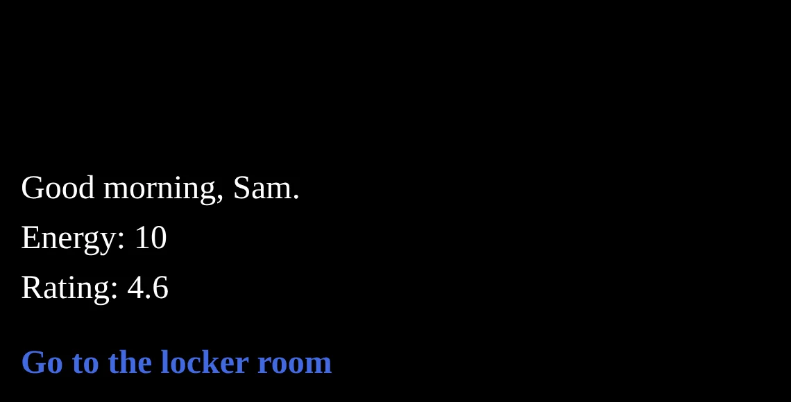
Seeing a 0 where your value should be? Check the spelling and capitals of the variable, and that your Setup passage has the startup tag.
Step by step: how do I change a variable when the player picks something?
The player can take the badge or leave it, and you want the game to remember which. You may have tried putting (set: $hasBadge to true) next to the "Take the badge" link... and now the player gets the badge no matter what they click.
✗ What people usually try first
(set: $hasBadge to true)
[[Take the badge->Scanner]]
[[Leave it->Scanner]]
A (set:) doesn't wait for a click. It runs the moment the passage appears, so the player has the badge before choosing anything. (How Twine runs your code.)
Put the (set:) inside a (link:), so it only runs when that choice is clicked.
Instead of [[Take the badge]], type (link: "Take the badge"). The words in quotes are what the player clicks.
Right after it, with no space, open square brackets [ ]. Everything inside runs only when the player clicks.
Inside the brackets: first the change, (set: $hasBadge to true), then where to go next, (goto: "Scanner").
The other choice stays a normal link:
✓ Passage: Locker Room
Your badge is hanging in the locker.
(link: "Take the badge")[(set: $hasBadge to true)(goto: "Scanner")]
[[Leave it->Scanner]]
Changing other kinds of variables works the same way. Some examples to put inside the brackets:
(set: $energy to it - 2) <!-- number: subtract 2 -->
(set: $money to it + 50) <!-- number: add 50 -->
(set: $hasBadge to true) <!-- true/false: switch it -->
(set: $job to "manager") <!-- text: replace it -->
it means "the variable's current value", so it - 2 means "2 less than now".
Simpler alternative: give each choice its own passage ([[Take the badge->Badge Taken]]), and put the (set:) at the very top of that passage. It works because that passage only appears if the player chose it. Note: links made with (link:) don't draw an arrow on the story map, so the map can look disconnected even when the game works.
Step by step: how do I show different text depending on a variable? (if / else)
The player took the badge, or didn't. Now you want the next passage to react: the scanner beeps green if they have it, red if they don't.
Use (if:) with a hook for the "yes" text, then (else:) with a hook for the "no" text.
Type (if:, then the thing to check, then ): (if: $hasBadge is true).
Right after it, no space, put the text to show when it's true in square brackets: [The scanner beeps green. You're in.]
Right after that, type (else:) and, in brackets, the text to show otherwise: [The scanner beeps red.]
You can put code inside the hooks too. Here, the rating drops only in the "red" version:
Passage: Scanner
(if: $hasBadge is true)[The scanner beeps green. You're in.](else:)[The scanner beeps red. (set: $rating to it - 0.3)Your rating drops.]
Rating: $rating
[[Start your shift->Shift]]
Play it twice, once taking the badge and once leaving it:
Took the badge.Left it: red, and the rating dropped.
Ways to check (put these inside the (if:)):
You want to check...
Write
is equal to
$hasBadge is true$name is "Sam"
is not equal to
$energy is not 0
more than / less than
$money > 100$energy < 3
at least / at most
$money >= 100$energy <= 3
two things at once
$hasBadge is true and $energy > 5
either one
$rating < 3 or $timesLate > 2
More than two options? Use (else-if:). Twine checks them in order and shows the first one that's true:
Step by step: how do I show or hide a choice depending on a variable?
Some choices should only be available sometimes: only players with a badge can go to the break room, only players with enough money can buy coffee. Or you want the player to see a choice they can't take.
Put the link inside an (if:) hook. Add spaces between the brackets to keep it readable.
Write the link like normal: [[Go to the break room->Break Room]].
Wrap it in an (if:) hook, with a space on each side so the brackets don't blur together:
(if: $hasBadge is true)[ [[Go to the break room->Break Room]] ]
Now players without the badge don't see the choice at all.
Want them to see what they're missing? Add an (else:) with the choice crossed out (~~ on each side) and a reason:
Passage: Shift
(if: $hasBadge is true)[ [[Go to the break room->Break Room]] ](else:)[~~Go to the break room~~ (you need a badge)]
[[Keep working->End]]
Play it both ways:
With the badge: the choice is a link.Without it: crossed out, not clickable.
A crossed-out choice can make an argument all by itself: it shows the player what's available to someone else.
How do I see what my variables are doing? (the debugger)
Something's off: a variable doesn't seem to change, a choice doesn't count, the game says 0. You need to see what's actually going on inside your game.
Test your game with Build → Test (or Test From Here). A panel appears at the bottom showing every variable and its value, live.
Open your story and click Build → Test. (Plain Play doesn't show the panel, and neither does your game on itch: players never see it.)
Look at the panel at the bottom right. Variables lists each variable and what's in it right now. Play a passage, and watch the values change.
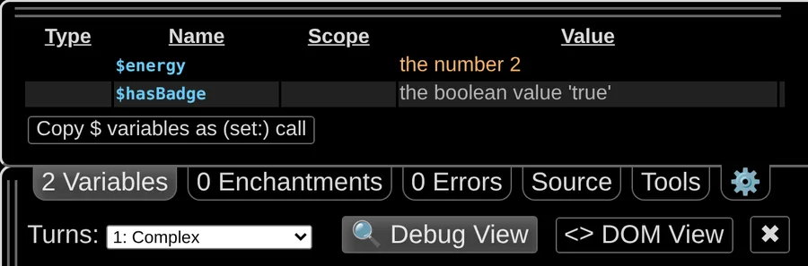
Click Debug View to see every macro and hook in the passage, labelled. Click it again to go back to normal.
If your code has a mistake, Twine shows a purple error box where it happened, and the Errors tab counts them. Read the message: it usually names the problem.
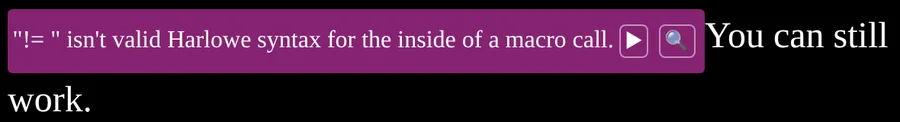
Testing from the middle?
Test From Here skips everything before that passage, so things can look broken when they aren't (read this). And don't mix it up with Start Story Here (why).
Using it to find problems:
The number on screen didn't change? Check the panel. If the variable did change, your code works: it's a display issue.
A variable you set isn't in the list at all? It never got set. Check spelling and capitals, and your startup passage.
The panel says the string "true" (or the string "18") when you wanted true/false or a number? You used quotes (fix).
Your final project needs images (check the table in the project document). Pick the option that matches where your picture is. Broken picture? Go here. Pictures saved on your computer? The zip maker packs them for itch. Want one picture on top of another? Use the layering tool.
Step by step: how do I add an image I found online?
You found a picture online that you want in your game, or you uploaded one to a site like Imgur. You need to get it into Twine.
Copy the image's own address (its URL), and paste it into one line of code. Then test it on itch.
Use a computer, in Chrome. This is hard to do on a phone.
Click on the image so it opens big, by itself. (In Google Images, click the image, then click it again or click "Visit" to get to the actual picture.)
Right-click on the picture itself (on a Mac trackpad: click with two fingers). A menu pops up.
Click Copy image address. Not "Copy link address", not "Copy image", and not the address bar at the top.
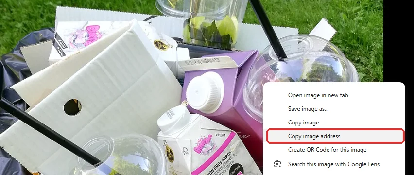
Right-click on the picture, then Copy image address. (Firefox calls it Copy Image Link; Safari, Copy Image Address.)
Check what you copied. Paste it into a new browser tab and press Enter. You should see only the picture, on a plain background. If you see a whole website (menus, comments, other pictures), you copied the wrong thing: go back to step 2.
Check the address itself. Paste it somewhere you can read it and compare with this:
✓ Good image addresshttps://i.imgur.com/Ab12Cd3.pnghttps://upload.wikimedia.org/.../Office.jpg
Starts with https://
Ends with .png.jpg.jpeg.gif or .webp (sometimes followed by ? and more letters, which is fine)
✗ Not an image addresshttps://www.google.com/imgres?imgurl=...https://drive.google.com/file/d/.../viewhttps://www.pinterest.com/pin/12345/C:\Users\you\Downloads\office.jpg
A search result, a Drive or Pinterest page, or a file on your computer
Put it in your passage. Copy this line, and replace the capital letters with your address. Keep the quotes:
Play it (Build → Play). See the picture? Good. See a little broken-picture icon? Go here.
Test it for real once it's on itch, in an incognito window. Some websites block their pictures from showing on other sites, so an image can work in Twine and then break on itch.
Where does the picture show up? Exactly where you put the line in the passage.
Above the text: put the <img> line first, before your words.
Below the text: put it last, after your words (but before your links, if you want the links at the bottom).
In the middle of the screen (centred): wrap it like this, all on one line:
<div style="text-align: center"><img src="PASTE THE ADDRESS HERE" width="200"></div>
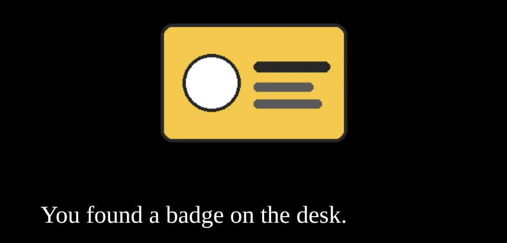
The centred line first, then the text.
Using images you found online is fine for this project: just list where you got them in your reflection's works cited.
Your picture is a file on your computer (not online)? Use Option 2.
Want it on top of another picture, like a badge on a desk? Go here.
How do I add images that are saved on my computer?
Your images are files on your computer: art you made, photos you took, things you downloaded. Twine can't see your computer, so linking to C:\Users\... only works for you.
Put your game and your images in one folder, zip it, and upload the zip to itch.
Make a new folder on your computer. Put all your images in it.
In Twine, use just the file name:
<img src="badge.png" width="300">
When you're done, Build → Publish to File, and save the .html into that same folder.
Rename the .html to index.html. itch needs this name to know which file starts the game.
Open the folder, select everything inside it, and zip it (Windows: right-click → Send to → Compressed (zipped) folder. Mac: right-click → Compress).
Where the picture shows up in the passage (above the text, below it, centred) works the same way as Option 1.
Let a tool do steps 3 to 6
The zip maker takes your published .html and your pictures, fixes the names, and gives you the zip.
✓ my-game.zip
├── index.html
├── badge.png
└── office.jpg
✗ my-game.zip
└── my-game/
├── index.html
└── badge.png
Left: open the zip and index.html is right there. Right: the game is buried inside another folder, which happens when you zip the folder itself instead of what's inside it. Open your zip to check before uploading.
Three things that break it
Capital letters. On itch, Badge.PNG and badge.png are different files. Use lowercase, no spaces, no accents: break-room.png, not Pause Café.PNG.
Wrong file name. The game must be called exactly index.html (not index.html.html).
Wrong kind of archive. itch takes .zip only. Not .rar, not .7z.
Normal, not broken
With this method, your images won't show when you test inside Twine. To check them, double-click the index.html in your folder, or test on itch.
You still submit the .html on Lea as usual. itch is where the images have to work.
My image is huge, tiny, or stretched. How do I fix the size?
Your image pushes all the text off the screen, or it's squished and warped.
Set only the width. The height adjusts itself and keeps the shape.
✓ Keeps its shape
<img src="badge.png" width="300">
✗ Warps if the numbers don't match the original shape
<img src="badge.png" width="300" height="300">
Play with the number until it looks right. A percentage also works (width="70%"). Starting with an image around 800 to 1200 pixels wide makes life easier than a giant photo. Want to make your own art? Try Piskel or Pixilart.
How do I put an image behind my text?
You want a background picture for your game (an office, a forest), maybe a different one in different parts of the game.
Paste a few lines into your story's Stylesheet. One for the whole game, one per tag for specific passages.
One background for the whole game
Open your story, click Story at the top, then Stylesheet.
Paste this in, and replace office.jpg with your image's file name or address (same rules as any image):
CSS is fussy: every { needs a }, lines end with ;, and quotes must be straight (why).
How do I...?
How do I show the player's stats on every passage?
You want the player's energy (or money, or rating) to show at the bottom of every passage, like a health bar in a game. You don't want to paste it into 50 passages.
Make one passage with the tag footer. Twine adds it to the bottom of every passage for you.
Make a new passage. Call it anything (StatusBar is fine). It doesn't need any links.
Click + Tag, type footer, and save. (Use header to put it at the top instead.) Type it exactly, all lowercase: Footer won't work, and Twine won't tell you.
Write what you want shown:
Passage: StatusBar (tag: footer)
<hr>
Energy: $energy | Rating: $rating
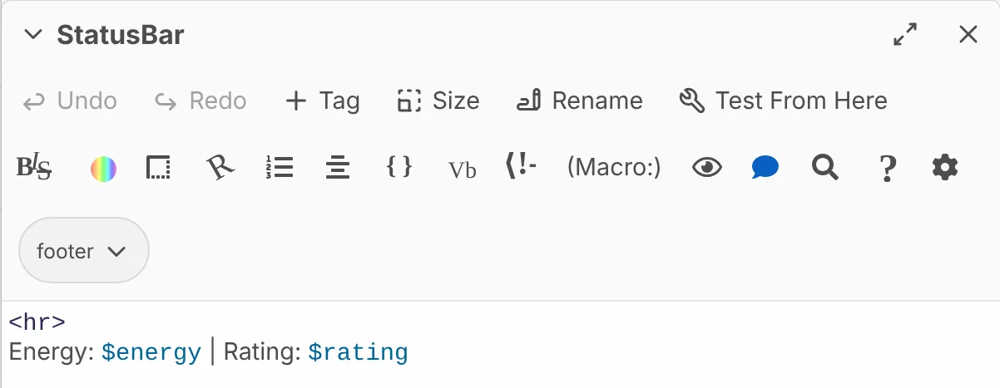
The tag shows up under the toolbar.
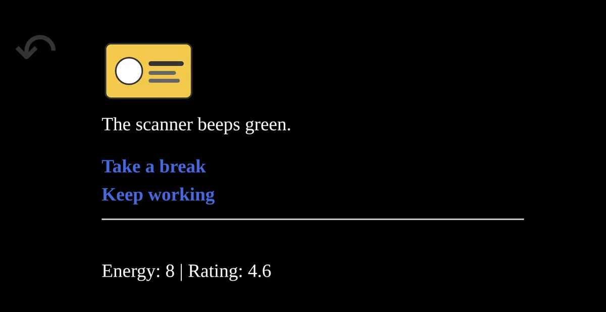
What the player sees, on every passage.
Tip
You can use (if:) in a footer too, like a warning that only appears when $energy is low.
Want a bar that fills and drains instead of a number? See the meter recipe.
Can I add music or sound?
You want background music or sound effects, and Twine has no "add sound" button.
Use a small add-on, put the audio files in your game folder, and upload a zip.
The easiest route is Bitsy Audio (yes, it's a Bitsy tool; no, that's not a typo). For more control, the Harlowe Audio Library. Either way, your audio files go in the folder with your game, and you upload a zip, exactly like images on your computer.
Don't start music on the first passage
Browsers block sound until the player has clicked something. Put a "Start" link first, and start the music on the passage after it.
Please don't make it annoying. Players will mute you.
What's the little arrow in the corner of my game? (hide it)
Play your game and look at the top-left corner: from the second passage on, there's a small curved arrow. That's Harlowe's undo button, and players see it on itch too. One click and the game rewinds a step, as if the last choice never happened.
The curved arrow, top left.
Hide it. It undoes your variables along with the choice, so every consequence in your game can be taken back with one click.
Lost money, a dropped rating, a door you locked: undo brings them all back. For a game that makes its argument through variables, that undoes the whole point. Don't use it while testing either, or you'll think your systems work differently than they do. Restart the test instead.
Already clicked it and your stats look wrong? Go here.
Open your story, click Story at the top, then Stylesheet.
Paste this in:
tw-sidebar { display: none; }
Play the game again and check that the arrow is gone.
The browser's back button is different
The browser's own back button (or Alt + ←) doesn't go back one passage. It leaves the game and goes to whatever page you were on before. Warn your playtesters.
How do I add chance (dice rolls, random events)?
You want something to be up to luck: a 1-in-6 chance of finding money, a random event, a coin flip that decides if you get caught.
Use (random: 1, 6): it picks a whole number from 1 to 6.
(set: $roll to (random: 1, 6))
(if: $roll is 6)[You find a twenty on the ground.](else:)[Nothing. Just pavement.]
How do I leave a note in a passage that players won't see?
You want to remind yourself (or your group) of something right inside the passage: "Ana is writing this ending", "fix this link later". But anything you type in a passage shows up in the game.
Turn the note into a comment: select it and click the <!- button in the passage toolbar. Players never see comments.
Type your note in the passage.
Select it (click and drag over it).
Click the <!- button in the toolbar at the top of the passage (hover over it: it says "HTML Comments").
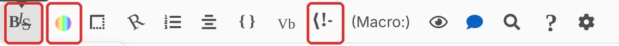
The comment button is the third one circled.
Twine wraps your note in <!-- and -->. You can also type those yourself:
<!-- Ana is writing this ending. Don't touch. -->
How do I make text bold, italic, or a different colour?
You want a warning in red, or a thought in italics, and you don't want to learn more code.
Use the buttons at the top of the passage: select your text, then click B/S (styles) or the colour wheel.
Open the passage and select the words you want to change.
Bold, italic, strikethrough: click B/S and pick one. (Or press Ctrl + B for bold, Ctrl + I for italics.)
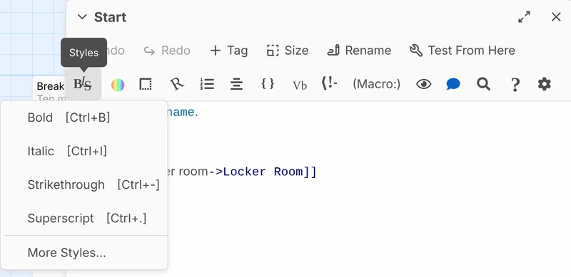
Colour: click the colour wheel. Under Text colour, choose Flat colour, pick a colour, check the preview at the top, and click Add.
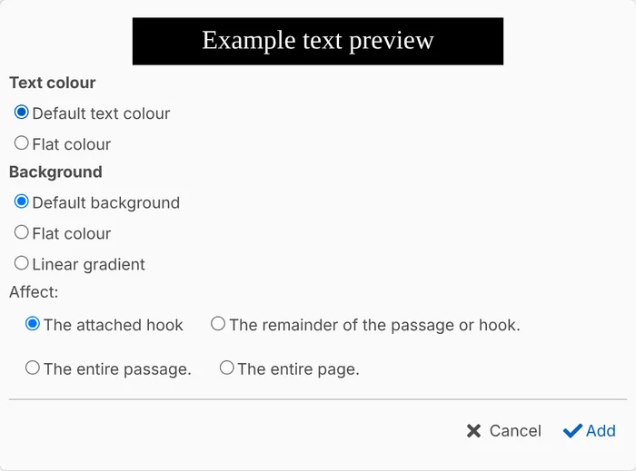
Twine writes the code for you. Easy to overdo, so go light.
How can my game react to where the player has already been?
You want the game to remember what the player has seen, without making a variable for everything: a different message the second time they enter a room, a choice that only appears if they've already visited the break room.
Harlowe remembers every passage the player has visited. Ask it with visits, (visited:), or (history:).
Has the player been to a passage before? Use (visited: "Name"):
(if: (visited: "Break Room"))[You've already had your break today.](else:)[ [[Take your break->Break Room]] ]
Is this the first time in this passage?visits counts how many times the player has been in the current passage (this visit included):
(if: visits is 1)[First day on the job.](else:)[Back again. Visit number (print: visits).]
To show the number, use (print: visits). Typing just "visits" in your text prints the word "visits".
Another way to check:(history:) is the list of every passage visited, in order. Check it with contains:
(if: (history:) contains "Break Room")[You've already had your break today.]
Good for arguments about memory, routine, or repetition: the game can notice that the player keeps coming back to the same place.
itch.io
How do I upload my game to itch.io?
Your game is ready to playtest (or submit), and you need a link people can click and play in their browser.
Make a free itch account, upload your .html (or .zip), and change four settings. Then test the link.
A .twee file is not your game
It only opens inside Twine. To submit on Lea or upload to itch, always use Build → Publish to File, which makes the .html. See the difference.
Make a free account at itch.io with an email you actually check.
Click the arrow next to your avatar (top right) → Upload new project.
Fill in a title and a short description. Nothing fancy.
Set Kind of project to HTML. This is the most important setting. If you leave it on "Downloadable", nobody can play in the browser.
Upload your file: the .html from Publish to File, or your .zip if you have images or sound in it.
When it finishes uploading, tick This file will be played in the browser.
Set the viewport size (1280 × 720 is a fine start). Under Frame options, tick Mobile friendly and Fullscreen button.
Scroll to the bottom, click Save & view page. Check that your game shows up.
Go back to the settings (click the DRAFT banner or Edit game at the top), scroll to the bottom, and under Visibility & access choose Public. Save again. (Public only appears after you've saved once.)
Copy your game page's address, open it in an incognito window, and play it. If it works there, it works for everyone.
Even with Mobile friendly ticked, phones are hit or miss. Test on a computer, and expect your reviewers to play on one.
Does my file have to be called index.html?
You uploaded a zip to itch and the game won't start, or someone in your group says the file "has to be called index.html" and you don't know if that applies to you.
Only if you're uploading a zip.
Uploading just the .html file: any name works (The Shift.html is fine).
Uploading a .zip (because of images or sound): the game inside must be called index.html.
I fixed something. How do I update my game on itch?
You already uploaded, then found a typo or a broken link. You want to put up the fixed version without changing your link.
Click Edit game, and upload the new file.
Delete the old file (otherwise the old one may be the one that plays).
Tick This file will be played in the browser on the new one.
Save, and test in incognito. Your link stays the same, so you don't need to resubmit it.
Submitting
How do I take a screenshot and put it in a PDF?
Your check-in (or reflection) needs screenshots of your game inside a PDF, and you've never taken a screenshot on purpose.
Take the screenshot with a keyboard shortcut, paste it into a Google Doc, and download the Doc as a PDF.
Open your game (or the Twine passage you want to show) on screen.
Take the screenshot:
Windows: press Windows + Shift + S together. The screen dims. Drag a box around what you want. It's now copied.
Mac: press Cmd + Shift + 4 together. Drag a box around what you want. It's saved on your Desktop.
Put it in your Google Doc: click where you want it and press Ctrl + V (Windows). On a Mac, drag the file from your Desktop into the Doc.
Make the PDF: in Google Docs, click File → Download → PDF Document (.pdf).
Open the PDF before you submit, and check the screenshots are really in it.
Did I do everything? (final checklist)
You think you're done, and want to make sure nothing slipped through. Due dates live on Lea and nowhere else.
Tick these off. (The boxes are just for you; nothing is saved or sent.)
Don't lose easy marks: what should I check before I submit?
These are the things that cost groups marks every semester: broken links, missing images, games nobody can open. Most take two minutes to check. Go down the list.
Tools
Tool: is my image link a good one?
You copied an image address, and you're not sure it's the right kind of link, or your picture shows up as a broken icon in your game.
Paste the address below and click Check. You'll see if it loads, what's wrong with it, and the code to put in your passage.
Your game uses pictures (or sounds) saved on your computer. They work for you, but on itch they show as broken picture icons. Or you're just not sure how to zip everything the right way.
Give the tool your published game and all your pictures. It fixes the picture names inside your game, names the game index.html, and gives you a zip that's ready for itch.
In Twine: Build → Publish to File. Save the .html file somewhere you can find it.
Pick that .html file:
Pick all your pictures and sounds. To pick several at once, hold Ctrl (Mac: Cmd) while you click them.
What it fixes for you
Paths to your own computer, like C:\Users\you\Downloads\badge.png. They become just badge.png.
Capital letters that don't match. Your game says Badge.PNG but the file is badge.png: that works on your computer and breaks on itch.
Spaces and accents in file names (Pause Café.jpg becomes Pause-Cafe.jpg, in the zip and in your game).
Folders: everything goes in the top of the zip, with index.html, the way itch wants it.
What it can't fix
Pictures you forgot to add. It lists them: find the file and run it again.
Pictures from websites (https://...). Check those with the image link checker.
Picture names your code builds out of pieces, like 'ana-' + $mood + '.png'. It puts those files in the zip with their names unchanged, so spell them exactly like your code does, in lowercase.
Everything happens in your browser: your game and pictures aren't uploaded anywhere. Keep submitting your normal .html on Lea; the zip is for itch.
Tool: combine everyone's parts into one game
Each person in your group built their part in their own Twine, and you need one game. Doing it by hand in Notepad (the manual way) is fiddly.
Everyone exports their part with Build → Export As Twee. Load all the files below, click Combine, and import the file it gives you.
A .twee file is not your game
It only opens inside Twine. To submit on Lea or upload to itch, always use Build → Publish to File, which makes the .html. See the difference.
Load everyone's .twee files (hold Ctrl to pick several, or add them one at a time). Put the person with the start of the game first.
Name the combined game (a new name, so importing doesn't replace anything):
In Twine: Library → Import, and pick the file you just downloaded. Then play every path from the start.
The tool runs only in your browser: nothing is uploaded anywhere. Before you export, make sure no two people used the same passage name, and that everyone spelled the variables the same way (more).
How do I put one image on top of another?
You want a character standing in a room, or a badge that appears on the desk once the player picks it up.
Use the tool below. Fill in boxes 1 and 2, move the top picture in box 3, then copy the code in box 5 into your passage.
1
The background picture (the big one at the back)
2
The picture that goes on top (the small one in front)
3
Move the top picture to where you want it
The picture with the blue dashed outline and the DRAG ME tag is your top picture. On a computer: put your mouse on it, hold the left button down, move the mouse, and let go. On a phone: use the two number boxes under the preview instead.
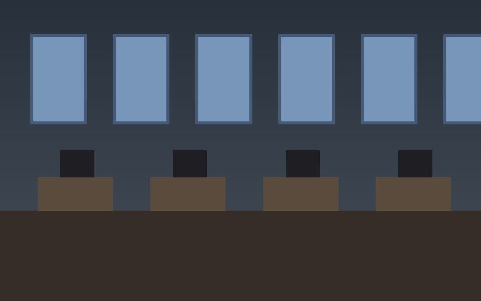
✥ DRAG ME
Until you type full https:// addresses in boxes 1 and 2, the preview shows sample pictures. The code still uses your file names.
4
Optional: only show the top picture after something happens (like picking up the badge)
5
Click Copy, and paste it into your passage. Keep it all on one line.
Your code
The top image should be a PNG with a transparent background, or it'll sit there as a rectangle. (Piskel and Pixilart save transparent PNGs.)
Keep the code on one line, exactly as the tool gives it.
Using file names (not addresses)? Then this needs the zip method, like any image on your computer.
What it looks like in the game.
If you edit the code by hand: the (if:) has to go around the whole thing, like the tool does it. An (if:) placed inside the box makes the top image land below the picture instead of on it.
Tool: build your game's look (colours, font, text box)
You want your game to stop looking like plain Twine, but you don't want to write CSS yourself.
Pick a starting look, change what you want, and watch the preview. Then copy the code into Story → Stylesheet.
1
Pick a starting look (you can change everything after)
2
Colours (click a square to pick a colour)
3
Text
4
A box behind your text (helps if you use a background picture)
5
Extras
6
Preview (this is roughly what a passage will look like)
The preview only shows background pictures with a full https:// address. A file name still works in your game if you use the zip method.
7
Copy this into your Stylesheet
Click Copy on the box below.
In Twine, open your story, then Story → Stylesheet (pictures).
Click at the very bottom of what's already there, press Enter, and paste (Ctrl+V, Mac: Cmd+V).
Play your game to see it.
Story → Stylesheet
Changed your mind?
Paste a new version at the bottom of the Stylesheet: the lowest one wins. Or delete the old one first, from /* My game's look down to its last }. Using a template? Paste this at the bottom of its Stylesheet to recolour it.
Make it look like a game
All optional. The look is not your argument: your choices and variables are. Get the game working first, then come here.
How do I change the colours, font, and look of my whole game?
Your game still looks like plain Twine (black page, white text, blue links), and you want it to look like your world: an app, an office, a phone.
Open Story → Stylesheet and paste code there. Everything in the Stylesheet changes every passage at once.
Open your story. Click Story at the top, then Stylesheet.
Paste this in. It changes the background colour, the text colour, the font, and the link colour:
Then use it in any passage (no dot here), all on one line:
In a passage
<div class="warning">Your rating dropped.</div>
If everything suddenly looks wrong
Undo the last thing you pasted. The Stylesheet doesn't show errors: one missing } quietly breaks everything after it.
Every { needs a }. Every line inside ends with ;. Quotes must be straight (why).
Notes in the Stylesheet are written /* like this */, not <!-- like this -->.
The Stylesheet is CSS, not Harlowe. $variables and (macros:) don't work in it. To colour one bit of text, use the toolbar instead.
Recipe: how do I make a meter, like a health or energy bar?
You show the player's energy as a number, and you want a bar that fills up and drains instead, like a health bar in a video game.
Two ways. Simple: one line made of blocks, no Stylesheet. Nicer: a smooth bar, using the Stylesheet.
Simple way: a bar made of blocks
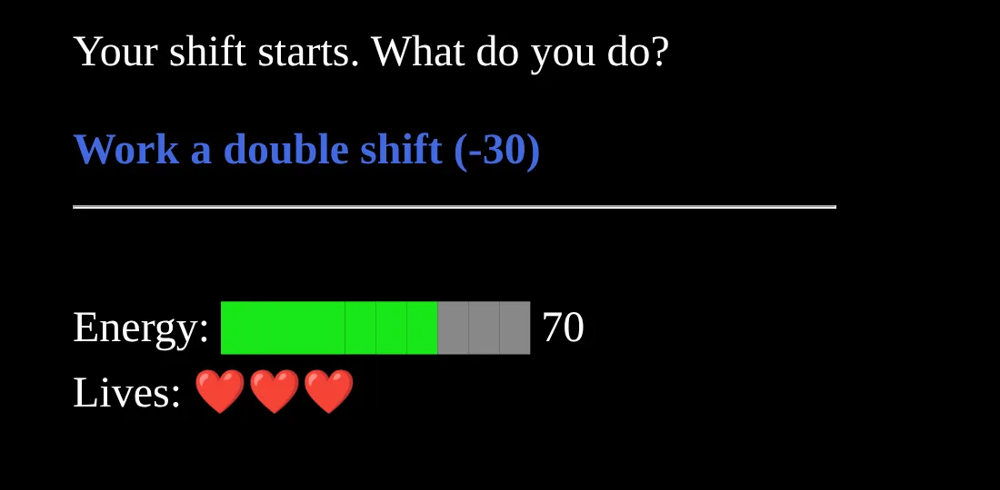
Energy at 70: 7 green blocks out of 10.
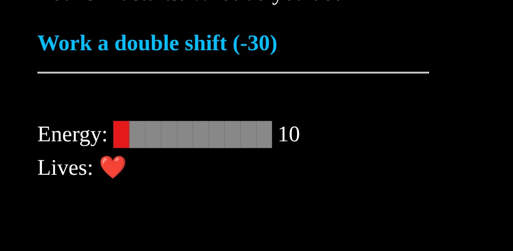
Below 30, the blocks turn red.
The starting number, in your startup passage. Keep it between 0 and 100:
(set: $energy to 70)
Make a passage with the tag footer (how), and paste this in. Copy it exactly, with the Copy button: the █ blocks are a special character you can't easily type.
What it does: it divides energy by 10 and repeats a block that many times (70 → 7 blocks), in red if energy is under 30, green if not. Then it adds grey blocks to make 10.
Change the number when the player chooses. Wrap it in (max: 0, ...) so it can't go below 0, or the game shows an error:
(link: "Work a double shift")[(set: $energy to (max: 0, $energy - 30))(goto: "Night")]
Going up? Use (min: 100, $energy + 20) so it stops at 100.
Hearts, coins, anything
For a small number like lives, just repeat an emoji: Lives: (str-repeated: $lives, "❤️") shows one heart per life. Same rule: never let $lives go below 0.
Try it right here first, or download it and open it in Twine: Library → Import, pick the file (pictures).
A .twee file is not your game
It only opens inside Twine. To submit on Lea or upload to itch, always use Build → Publish to File, which makes the .html. See the difference.
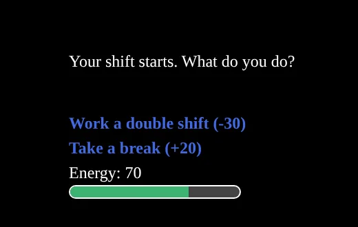
Energy at 70.
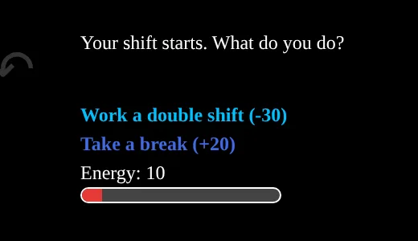
Below 30, it turns red.
The starting number, same as the simple way: (set: $energy to 70) in your startup passage, between 0 and 100. 70 means 70% full.
What the bar looks like. Paste this into Story → Stylesheet (how):
Story → Stylesheet
.bar {
width: 250px; /* how long the bar is */
height: 20px; /* how thick the bar is */
background: #444; /* colour of the empty part */
border: 2px solid white;
border-radius: 10px;
overflow: hidden;
}
.fill {
height: 100%;
background: #3cb371; /* colour of the full part (green) */
}
.fill.low {
background: #e53935; /* colour when it's low (red) */
}
Draw the bar on every passage. Make a passage with the tag footer (how) and paste this in. It's long and ugly. Copy it exactly; you don't need to understand it:
What it does: it builds the bar, using $energy as how wide the filled part is. If energy is under 30, it uses the red version.
Change the number when the player chooses. Same as any variable, with one extra: wrap it in (max: 0, ...) when it goes down, and (min: 100, ...) when it goes up.
(link: "Work a double shift")[(set: $energy to (max: 0, $energy - 30))(goto: "Night")]
(link: "Take a break")[(set: $energy to (min: 100, $energy + 20))(goto: "Break Room")]
Why: if $energy goes below 0, the bar shows as completely full. (max: 0, ...) stops it at 0, and (min: 100, ...) stops it at 100.
Two meters?
Copy the footer lines again, and change $energy to your other variable in all four spots. The number still has to be 0 to 100. Money that goes up to 5000 doesn't fit a bar; just show it as a number.
Recipe: how do I make a character's face change (happy, angry...)?
You have a character, and you want their picture to change depending on how the player treated them: smiling if you were nice, angry if you weren't.
Level 1: put a different picture in each passage. Level 2: if her face has to remember what the player did earlier, keep her mood in a variable.
Level 1: a different picture in each passage (nothing new to learn)
Make one picture per face, then put the right one at the top of each passage. The player's choice decides which passage they go to, so it also decides which face they see.
<img src="ana-angry.png" width="200">
Ana: Wow. OK.
Same rules as any picture: online or on your computer. For most games, this is all you need.
Level 2: her face remembers what you did
Use this when the face depends on something from earlier: you were rude in the first scene, and ten passages later, in a scene everyone sees, she's still angry with you. You'd need a separate copy of every later passage for each mood. A variable does it instead.
Make one picture per mood. Same size, same framing, so they swap cleanly. Name them in lowercase with no spaces: ana-neutral.png, ana-happy.png, ana-angry.png. (Online images work too: use their addresses.)
Show the right picture. Make a passage with the tag header so it appears at the top of every passage (how tags work), and paste:
Passage: Ana Picture (tag: header)
(if: $mood is "happy")[<img class="char" src="ana-happy.png">](else-if: $mood is "angry")[<img class="char" src="ana-angry.png">](else:)[<img class="char" src="ana-neutral.png">]
Only want her in some passages? Skip the header tag and paste that line into just those passages.
Size and centre her, in Story → Stylesheet:
.char {
display: block;
height: 220px; /* how tall the character is */
margin: 0 auto; /* centres the picture */
}
Change the mood when the player chooses:
(link: "Say sorry")[(set: $mood to "happy")(goto: "After")]
(link: "Say nothing")[(set: $mood to "angry")(goto: "After")]
Spell the moods exactly the same everywhere
"happy" and "Happy" are different words to Twine. If they don't match, there's no error: she just stays neutral. Check what $mood really is in the debugger.
The recipe file uses pictures stored on this website so it works right away. Swap in your own. Want her standing in a room? See background images and images on top of images.
Recipe: how do I make a visual novel dialogue box, with the name on top?
You want people's lines to look like a visual novel: the words in a box, and the speaker's name in a little tag sitting on top of it.
Paste the CSS into your Stylesheet once. After that, every line of speech is one line of code.
/* the box the words go in */
.dialogue {
position: relative;
background: rgba(0, 0, 0, 0.8); /* dark see-through box */
color: white;
border: 2px solid white;
border-radius: 10px;
padding: 24px 18px 14px;
margin: 34px 0 10px;
}
/* the name tag on top of the box */
.speaker {
position: absolute;
top: -16px;
left: 14px;
background: #c2185b; /* name tag colour */
color: white;
font-weight: bold;
padding: 3px 14px;
border-radius: 6px;
}
/* a different colour name tag for the player */
.you .speaker {
background: #1976d2;
}
In a passage, each line of speech is this. Change the name and the words. Keep it all on one line:
Recipe: how do I make lines appear one at a time, with a "Next" button?
Your conversation is a wall of text. You want one line, then the player clicks Next, then the next line, like a visual novel or a text chat.
Two ways. Way 1: put each Next inside the one before it, and the lines pile up on one screen. Way 2: one passage per line, and the screen clears each time.
Way 1: the lines pile up (good for chats and texts)
One passage
Ana: You're late.
(link: "Next")[Ana: Again.
(link: "Next")[Ana: The app noticed.
(link: "Next")[Ana: Anyway. Come on.
[[Follow her->Break Room]]]]]
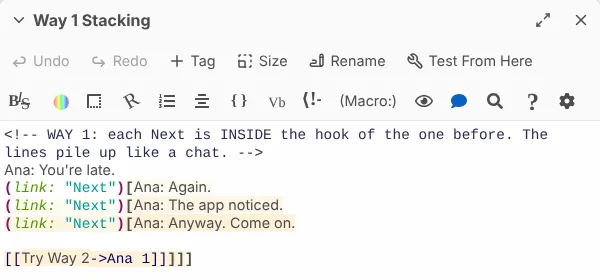
In Twine.
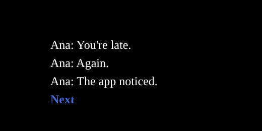
After clicking Next twice.
How it works: (link: "Next") shows the word Next. When it's clicked, the word disappears and its hook (the [ ] after it) appears. That hook holds the next line and the next Next. That's why it ends with ]]]: one ] closes each hook. Add a Next, add a ].
Put your real choices inside the last hook
Anything after the last ] shows up right away, before the player has clicked Next even once. Your links to the next passage go inside, like [[Follow her->Break Room]] above.
Way 2: one passage per line (good for visual novels)
Passage: Ana 1
Ana: You're late.
[[Next->Ana 2]]
Passage: Ana 2
Ana: Again.
[[Next->Ana 3]]
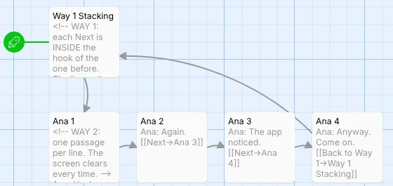
A row of passages. Every link says Next, but each goes to a different passage.
The -> is what lets every link say "Next" while going to a different passage (more). Combine it with the dialogue box for the full visual novel look: one box per passage.
Templates: how do I make my game look like a phone, an app, a form...?
Your game is about an app, a job, or a bureaucracy, and you want it to look like one. Building that from scratch is a lot of CSS.
Download a template, import it into Twine, play it to see how it works, then replace the words with yours.
How to use a template
Not sure which one? Click Play it on any template below to try it first.
On a computer, click a Download button. You get a .twee file.
In Twine: Library → Import, pick the file, and click Import.
Rename it right away: click the story card, then Story → Rename. If you import the template again later, Twine replaces anything with the same name.
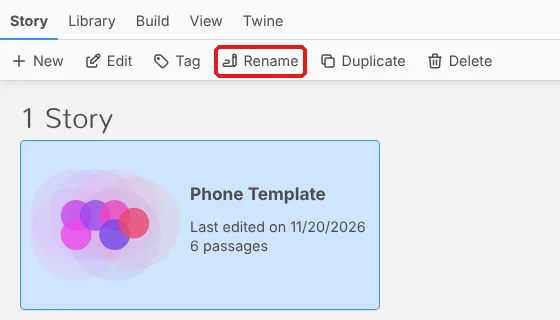
Open it (Edit) and play it first (Build → Play) so you see what each passage does.
Change the words. Keep the <div class="..."> parts; change what's between > and </div>.
Want different colours? Open Story → Stylesheet. The notes in /* */ say what each part does.
A .twee file is not your game
It only opens inside Twine. To submit on Lea or upload to itch, always use Build → Publish to File, which makes the .html. See the difference.
Already started your game?
You can still borrow a look. Import the template, copy everything in its Stylesheet into your game's Stylesheet, and copy its header passage if it has one. Then use the same <div class="..."> lines in your passages.
All templates already hide the undo arrow and use whole numbers for variables.
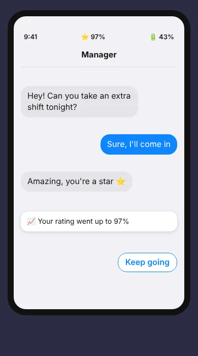
📱 Phone / text messages
Text bubbles (theirs grey, yours blue), choices that look like replies, a status bar showing $rating and $battery, and a notification box.
Good for: gig work, a boss who texts at midnight, dating apps, group chats.
(input-box: bind $name, "X", 1) makes a box the player types in, and puts what they typed into $name. (dropdown: bind $reason, "Housing", "Food") and (checkbox: bind $agree, "I agree") work the same way. To show a checkbox's value, use (print: $agree); just writing $agree shows nothing.
Troubleshooting
My itch link works for me, but other people say it's broken.
Your game plays fine when you open it. Your peer reviewers (or I) get "page not found", or a page with no game on it.
Most of the time, your page is still set to Draft. Change it to Public.
When you're logged in, itch shows you your own drafts, so it looks fine to you. Nobody else can see them.
Bottom of your game's Edit page. Public only appears after you've saved once.
Then open your link in an incognito / private window. If it works there, it works for everyone. Still broken? Check these:
Did you tick This file will be played in the browser?
Did you upload the .html from Publish to File (or your .zip), not a .twee or a screenshot?
Why aren't my pictures showing up?
You added an image, and in the game there's a little broken-picture icon, or nothing at all.
Usually, the address you used isn't the address of an image. It's the address of a web page that has an image on it.
Step 1: test your code with this image
Copy this line into a passage and play it. You should see a green check mark.
<img src="TEST-IMAGE-URL" width="300">
It shows up? Your code is fine, and the problem is your image's address (keep reading). It doesn't show up? Check your quotes and brackets against the line above.
What you should see.
Step 2: test your image's address. Fastest: paste it into the image link checker. Or by hand: Paste it into a new browser tab. If you see only the image on a plain background, it's right. If you see a whole website (menus, comments, a Google Drive viewer), it's wrong.
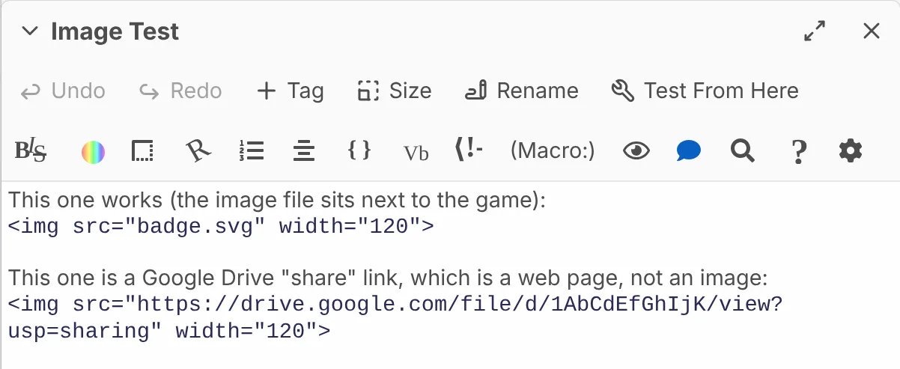
Two images in Twine......and in the game. The Google Drive link is a broken icon.
Addresses that won't work:
Google Drive, Google Photos, OneDrive share links. These are viewer pages, not images.
Google Image search results. Click through to the actual image, then Copy image address.
Sites that block their images from showing on other sites. Works on their site, breaks in your game.
Addresses starting with http:// (no "s"). itch's rules say files from other sites must use https://. Try changing http to https; if the image still loads, use that.
Files on your computer like C:\Users\.... Works only for you. Use the zip method, or let the zip maker do it.
I copied code and it doesn't work, even though it looks exactly right.
You copied code from a PDF, a Google Doc, or a Word file, pasted it into Twine, and got an error (or nothing happened).
.twee or .html? I'm not sure which file is my game.
You have a file ending in .twee and one ending in .html, and you're not sure which one to submit on Lea or upload to itch. Or you uploaded something and your game doesn't play.
The .html is your game. That's what you submit on Lea and upload to itch. A .twee is not a game: it's a plain text copy of your passages, and it only opens inside Twine.
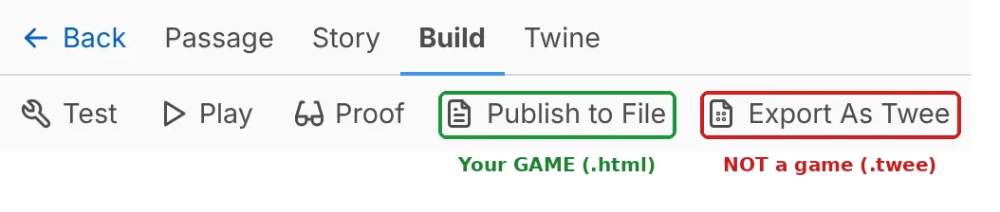
Both buttons are in the Build menu, right next to each other. Only one makes your game.
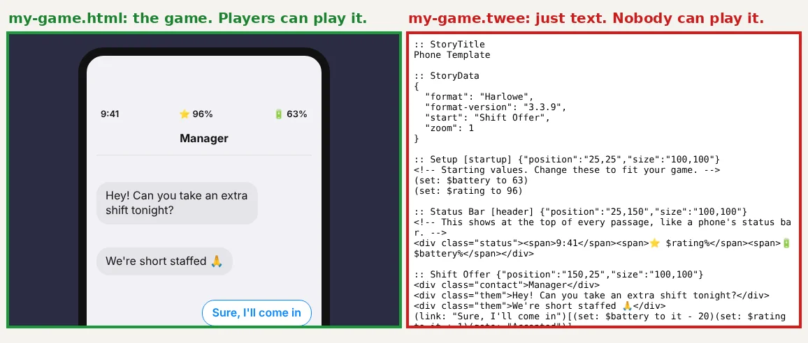
Same game, two files. Open the .html and you can play it. Open the .twee and you get a wall of text.
.html = your game
Made with Build → Publish to File
Opens in a browser and plays
Submit this on Lea
Upload this to itch (renamed index.html, or inside a zip)
.twee = NOT a game
Made with Build → Export As Twee, or downloaded from this FAQ (templates, recipes)
Just text. Nobody can play it.
Only for bringing passages into Twine: Library → Import
Never submit it on Lea or upload it to itch
Can't see the ".html" or ".twee" at the end of your file names? Your computer is hiding them. Turn them on:
Windows: open File Explorer, click View at the top, then Show, and tick File name extensions.
Mac: in Finder, click Finder in the top menu, then Settings, then Advanced, and tick Show all filename extensions.
Already submitted or uploaded the .twee? Import it into Twine (Library → Import), open it, click Build → Publish to File, and submit or upload that .html instead.
My game acts weird when I test from the middle (stats say 0, choices forgotten).
You clicked Test From Here on a passage near the end. Your stats say 0, the badge the player picked up earlier is gone, or a passage that should work looks broken.
Test From Here starts the game in the middle, as if the player teleported there. Nothing before that passage happened. Before you decide something is broken, test it again from the start with Build → Test.
Tested from the middle: Energy 0, Rating 0.
Why: Test From Here skips every passage before the one you picked. The choices, the points, the badge: none of it happened. In Harlowe, a variable that was never set shows as 0.
Stats say 0? Put your starting (set:) lines in a passage tagged startup (how). A startup passage always runs first, wherever you start, so your starting values are always there.
Something the player did earlier is missing? That's normal in Test From Here. Play from the start (Build → Test) and make those choices.
A passage looks fine in Test From Here? It can still break when played from the start. Always do a full test from the start before you submit.
Next to Test From Here is Start Story Here, which is something else entirely: don't click it by accident.
My game starts in the wrong passage.
You press Play (or open your game on itch), and it begins in the middle of the story, or on some random passage, instead of your first one.
Someone clicked Start Story Here by accident. It moves the green rocket, and the rocket marks where your game begins. Move it back.
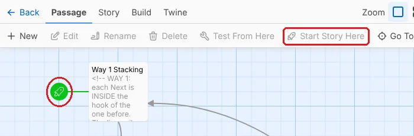
The green rocket sits next to the passage your game starts on. Start Story Here moves it.
In your story map, find your real first passage.
Click it once, so it's highlighted. (The buttons at the top stay grey until a passage is selected.)
Click Start Story Here at the top. The green rocket jumps next to that passage.
Play it from the start to check.
Already on itch? Publish again and re-upload (how), or players still start in the wrong place.
Not a test button
Start Story Here sits right next to Test From Here, and it's easy to mix them up. Test From Here only tests. Start Story Here changes your game, for everyone.
I clicked the little back arrow, and now my stats or choices are wrong.
You (or a playtester) clicked the curved arrow in the top-left corner to go back a step. Now the money is back, a choice is undone, or the numbers don't add up the way your game says they should.
That arrow is Harlowe's undo. It rewinds everything, your variables included, as if the last choice never happened. Your code isn't broken.
The curved arrow, top left.
While you're testing: don't use it. You'll think your systems work differently than they do. Start the test over instead.
In your finished game: hide it, so players can't undo every consequence with one click. It's one line in your Stylesheet (how).
The browser's own back button is different again: it doesn't go back one passage, it leaves your game. Warn your playtesters.
I clicked, my variable changed, but the number on screen stayed the same.
Your passage shows Strength: 1, with a "Do squats" link that adds 1. The player clicks it, and the screen still says Strength: 1. Your code looks right. What happened?
The code
Strength: $strength
(link: "Do squats")[(set: $strength to it + 1)]
Before the click.After the click: the screen still says 1, but Twine's test panel shows it's really 2.
Your code worked. The screen just doesn't update by itself.
Why: Twine writes a passage onto the screen once, when it appears (more on how code runs). Think of it like a printed page: changing the variable afterwards doesn't reprint what's already on the page. (Stats bars work the same way: they update on the next passage.)
Fix 1: show the new number inside the link's brackets, so it appears after the click:
Strength: $strength
(link: "Do squats")[(set: $strength to it + 1)You feel stronger. Strength is now $strength.]
With Fix 1, after the click.
Fix 2: send the player to a new passage, where everything is written fresh:
(link: "Do squats")[(set: $strength to it + 1)(goto: "Gym Results")]
My variable code doesn't work. What did I get wrong?
You wrote some variable code, and Twine shows an error, or it just doesn't do anything.
Check it against this list. These are the mistakes that break variables most often.
Use to when setting and is when checking. Not =.
✗ Doesn't work
(set: $energy = 10)
(if: $hasBadge = true)[...]
✓ Works
(set: $energy to 10)
(if: $hasBadge is true)[...]
Capitals matter: $Energy and $energy are two different boxes.
✗ Shows 0, because $Energy was never set
(set: $energy to 10)
You have $Energy energy left.
The hook goes right after the (if:), with no space.
✗ Doesn't work (space before the bracket)
(if: $hasBadge is true) [The scanner beeps green.]
✓ Works
(if: $hasBadge is true)[The scanner beeps green.]
For "not equal", use is not, not !=.
✗ Twine shows an error
(if: $energy != 0)[You can still work.]
✓ Works
(if: $energy is not 0)[You can still work.]
No quotes around true, false, or numbers. Quotes turn them into text.
✗ Never beeps green, and Twine doesn't warn you
(set: $hasBadge to "true")
(if: $hasBadge is true)[The scanner beeps green.]
✓ Works
(set: $hasBadge to true)
Curly quotes from Google Docs or PDFs break everything (fix). Code from other websites may be for a different format (why).
Code running at the wrong moment? Read how Twine runs your code. Variables showing 0 when you test? Fix. Number on screen not changing after a click? Fix.
My music doesn't play.
You added music, and the game is silent.
Most likely the browser blocked it. Browsers don't allow sound until the player clicks something, so start your music after a click.
Make your first passage a title screen with a Start link.
Start the music on the passage that link goes to.
Still silent? Check that:
The audio file is in your zip, next to index.html (same as images).
The file name in your code matches exactly, capitals included.
If it's an address online, it starts with https://.
My game looks squished or cut off on itch.
Your game works on itch, but it's stuck in a small box, the bottom of the text is cut off, or players can't scroll.
On your itch Edit page, scroll to Embed options and change these:
How should your project be run: choose Click to launch in fullscreen. Players click once, and your game fills the whole screen. This fixes most cramped games.
Enable scrollbars: tick it if long passages get cut off at the bottom.
Or, if you'd rather keep the game inside the page: make the viewport size bigger (try 1280 × 720 or more).
Save, then check it again in an incognito window.
Help, my game is gone!
You opened Twine and your story isn't there.
Don't panic yet. Check where you're working, then import your latest saved file.
Same computer and browser? Twine in a browser only keeps your game in that one browser, on that one computer (and the same browser profile). The Twine app keeps its own separate library. Go back to where you made it.
Were you in an incognito/private window? Then it was deleted when you closed the window.
Find your latest saved file. Look in your Downloads folder, Drive, or email for the .html you made with Publish to File. Open it with Library → Import (how).
Groupmates: did anyone else get a copy?
If none of these work, the game is gone, and I'm sorry. Start the save-a-dated-file habit right now, so it can't happen twice.
Nothing matches that. Try a different word, or send me a Mio.